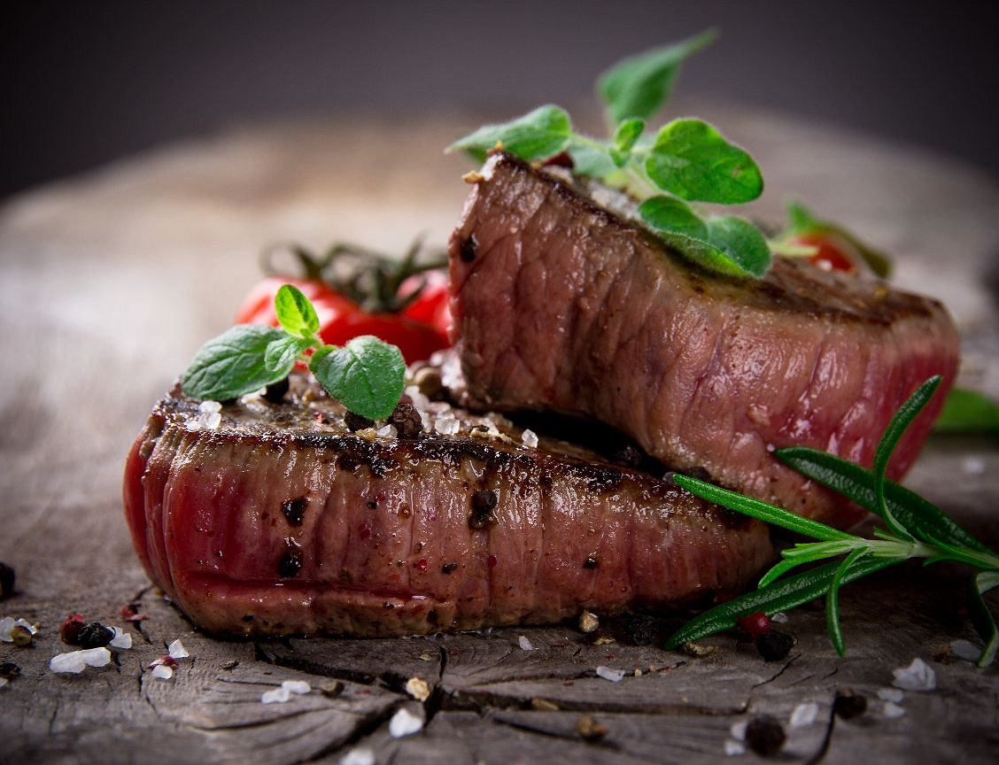

Home
(current)
About Us
Down To Try?
ZooBox
A bit of the wild delivered right to your doorstep!
Alligator Kebobs!
Ingredients
1/2 Cup Orange Juice Concentrate
1/4 Cup Orange Juice
2 Tablespoons light Soy Sauce
2 Tablespoons Brown Sugar
1 Teaspoon Cumin
1/4 Teaspoon Cayenne
1 lb Alligator Meat, cut into 1-inch cubes
Assorted Vegetables or fruit, cubed
Directions
For the marinade, combine orange concentrate, orange juice, soy sauce, sugar and spices in a medium glass bowl.
Reserve half for basting.
Add alligator cubes; stir to coat well.
Marinate for at least 15 minutes or up to 2 hours in the refrigerator for increased flavor.
Soak wooden skewers in water for 10 minutes to prevent them from burning.
Thread marinated alligator cubes onto skewers, alternating with vegetable or fruit cubes.
Heat the grill to high heat and grill kabobs for 6 to 8 minutes, turning once.
Brush with extra marinade for the first 5 minutes.
Discard any leftover marinade.
Zebra Steak!

Ingredients
4 lb Zebra Steak, cut into 8 oz steaks each 1/2 inch thick
2 Tablespoons oil
2 ounces butter
1 cup Dry Red Wine
1 cup Sweet Wine, Dessert
2 Garlic Cloves, Finely minced
4 Tablespoons Tomato Paste
4 Tablespoons Water
3 cups Potatoes, mashed
2 cups yams or 2 cups Sweet Potatoes, mashed
salt and pepper, to taste
Parsley, chopped
Directions
Heat oil and butter in a 10 to 12 inch skillet until almost smoking.
Fry steaks in pan, a few at a time, for about 3 minutes on each side, adding more oil and butter as needed.
Season each steak with salt and pepper and set aside, keeping warm.
Lower heat and add red wine and dessert wine.
Stir with residue left in pan.
Add garlic and cook for 2 minutes.
Add tomato paste and water.
Cook until sauce is quite thick.
Combine mashed potatoes and yams(or sweet potatoes) ina 2 qt saucepan and beat thoroughly.
Season the potato mixture to taste.
Spread the potato mixture on a large platter.
Arrange the steaks on the potatoes.
Pour the sauce over the steaks.
Sprinkle with chopped parsley.